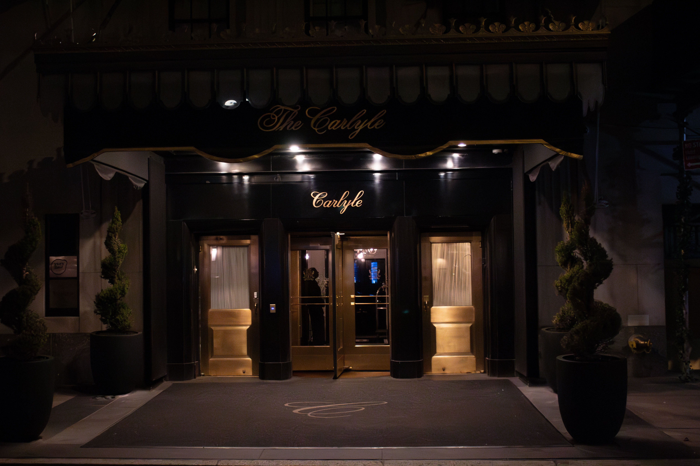

Bemelmans Bar: A New York Legacy
Bemelmans Bar, situated in the iconic Carlyle Hotel on the Upper East Side of New York City, transcends the conventional definition of a watering hole to stand as a veritable living museum, steeped in the allure and sophistication of a bygone era. Named in tribute to Ludwig Bemelmans, the renowned author and illustrator behind the beloved Madeline children's book series, the bar is an enchanting enclave that offers patrons more than just a drink—it offers an immersive experience into a world where art, history, and mixology blend seamlessly.

Upon entering Bemelmans Bar, one is immediately struck by the distinctive murals that grace its walls. These artworks, original creations of Bemelmans himself, depict whimsical scenes from Central Park as it meanders through the seasons, populated by characters from the Madeline series. These murals do more than decorate; they tell stories, inviting guests on a visual journey through New York’s landscapes and into the imaginative worlds Bemelmans crafted. This integration of art and space transforms every visit into a nostalgic voyage, allowing patrons to step back in time and immerse themselves in the elegance and charm that New York City is renowned for.


The cultural significance of Bemelmans Bar extends far beyond its visual appeal. For decades, it has served as a cultural touchstone, a meeting place for a diverse mix of celebrities, intellectuals, locals, and tourists, all drawn by its reputation for old-world glamour and its meticulously crafted cocktails. Conde Nast Traveler extols the bar's commitment to preserving its storied past, highlighting the attention to detail evident in its opulent gold-leaf ceilings and sumptuously upholstered leather banquettes. These elements, along with staff uniforms that echo designs from bygone days and the seasonally accurate murals, underscore a dedication to authenticity and luxury that is rare in today's world.

Delving into the offerings of Bemelmans Bar, one discovers a menu of signature cocktails that are as much a draw as the venue's aesthetic. Chilled Magazine explores the innovation and creativity that lie behind these concoctions, revealing stories that connect each drink to the bar's history and the broader narrative of the Carlyle Hotel. During an engaging exchange, a member of the waitstaff shared the backstory of the Vesper cocktail, named "Madeline’s Vesper" in homage to a regular patron, illustrating the personal connections and rich history that imbue the menu with depth and intrigue.

In an era where the allure of retro and speakeasy-style bars has surged, VinePair commends Bemelmans Bar for its authenticity. Unlike establishments that seek to mimic or recreate historical ambiance, Bemelmans offers an authentic slice of New York’s golden age, a testament to its genuine heritage and enduring appeal. This authenticity is further evidenced in the Carlyle Hotel itself, where corridors adorned with art deco antiques pay homage to the institution’s legacy and its role as a custodian of the city’s cultural and artistic traditions.


The New York Times captures the vibrant social scene that Bemelmans Bar fosters, portraying it as a vibrant gathering spot for New York's elite and a venue for impromptu performances by visiting celebrities. The bar's ability to attract a diverse clientele, from families to singles across a broad age spectrum, speaks to its unique charm and the inclusive atmosphere it cultivates.